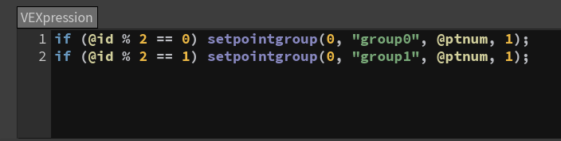

Different camera angles to show different interactions perspectives. The FPS is 40+ in BlackWell.
Reimport VAT Statue Particles
Due to the reduce the simulation time, so every frame can contain more points, so I change the vex to make the particles divided by 2 according to the ID.

And the original length for the particle is 300 frames. Cuz Danci mentioned when she did the interaction, it can go back to frame 1and frame 300, but after it returns, it suddenly jumps to a middle frame. It has proper start and end, but the middle just snaps instantly. So right now I reduced the frame to 150 to hopefully it can work.